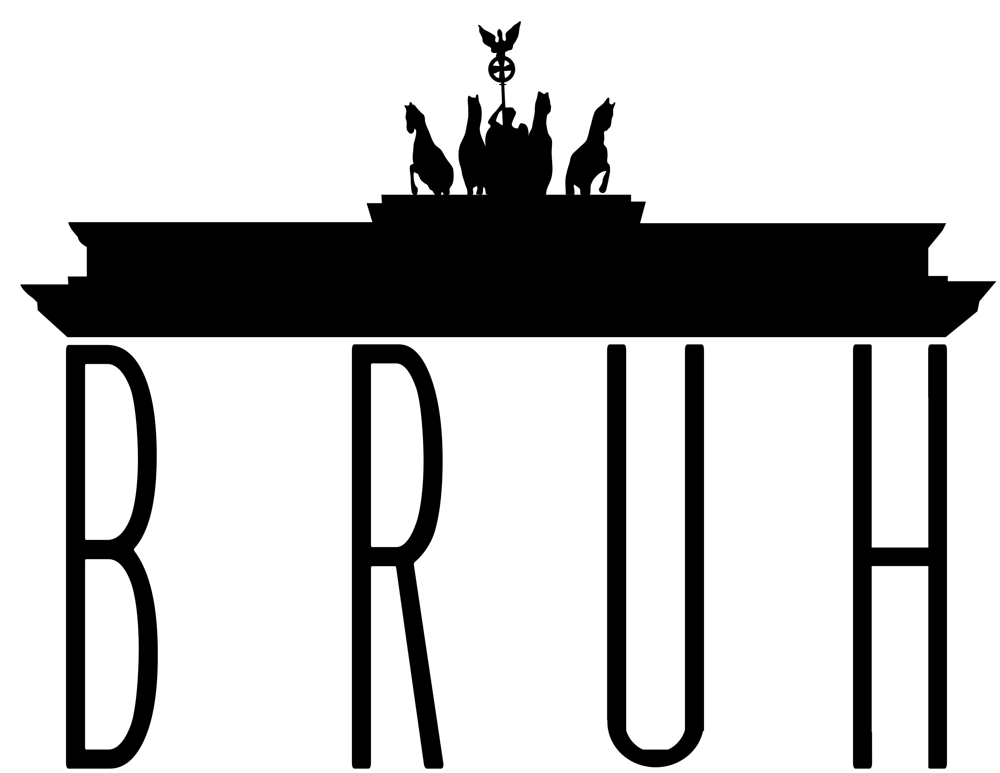
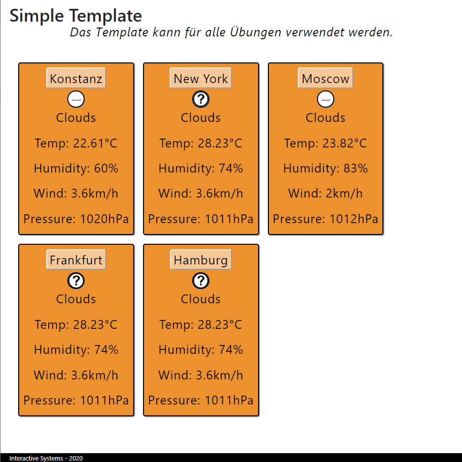
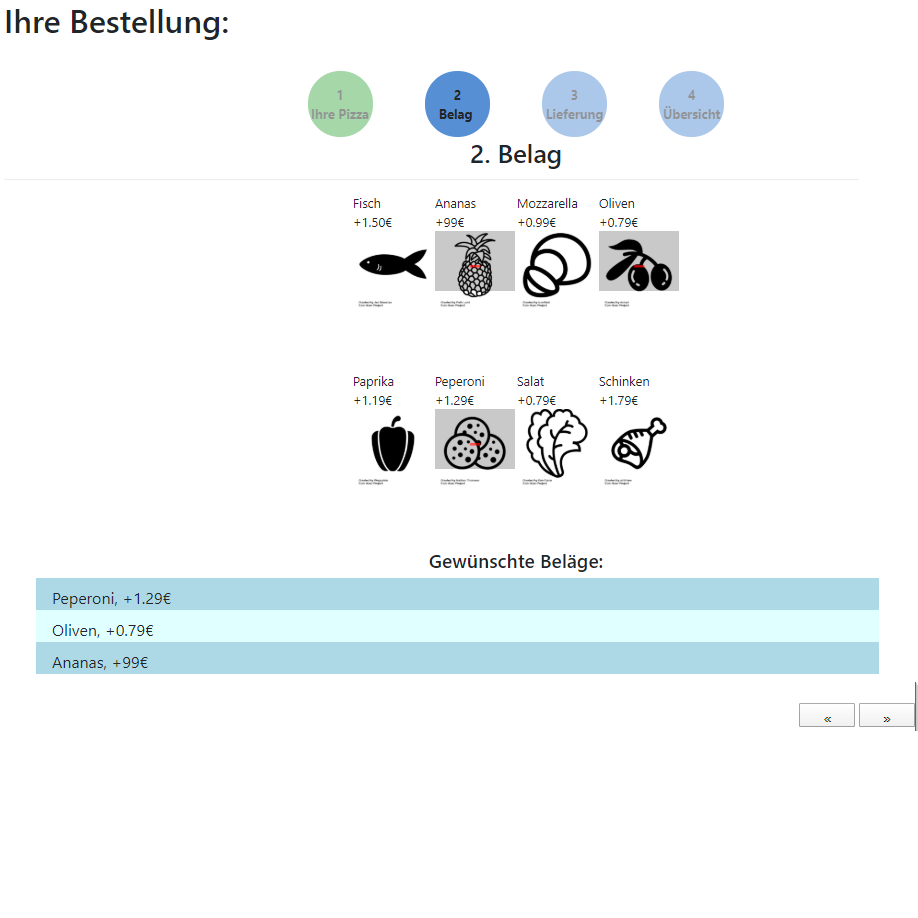
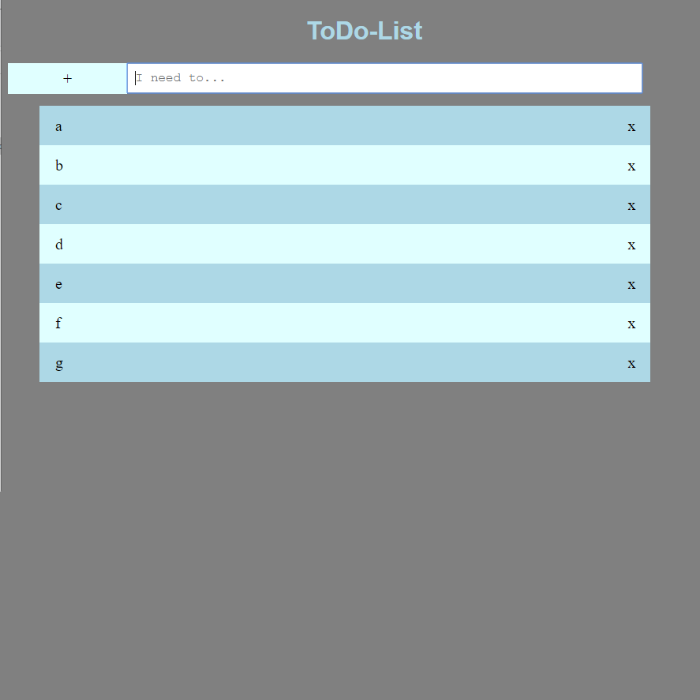
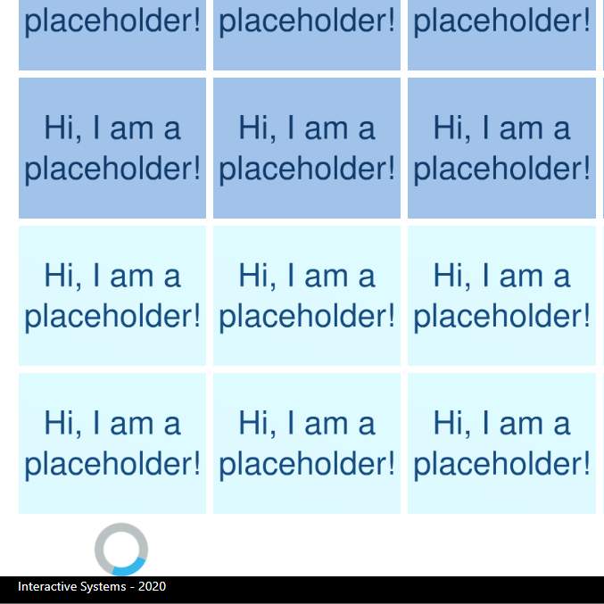
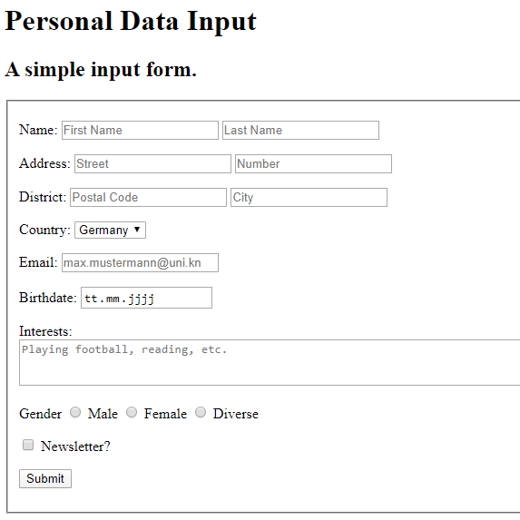
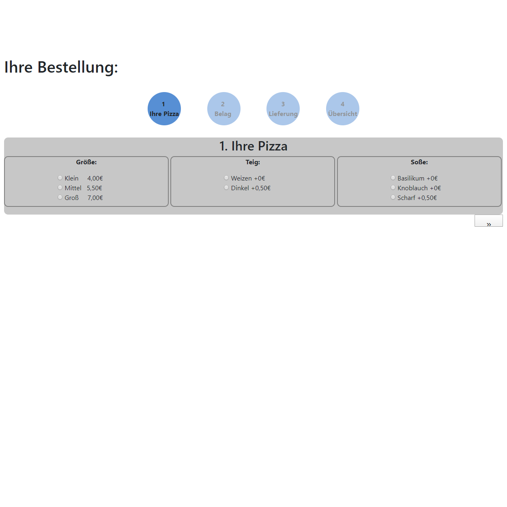

BruhMonument

Unser Projektteam, bestehend aus dem beiden Studenten Aziz Khashimov und Luca Bosch, hat sich darauf spezialisiert, Übungsaufgaben im Fach 'Interaktive Systeme' mit einer bis dato noch nie dagewesenen Liebe zum Detail zu bearbeiten. Dazu
benutzen wir unser gewaltiges Wissen über die Konzepte des Designs und natürlich auch alle Möglichkeiten, die ein HTML-Virtuose so hat. Das Größte an unseren Dienstleistungen ist allerdings, dass sie komplett kostenlos sind. Sie haben
richtig gehört. Die Entlohnung erfolgt lediglich durch kleine Almosen in ECTS-Form. Aber man darf natürlich, selbstverständlich und zweifelsohne nicht vergessen, dass man nicht für die Uni lernt, sondern für das Leben, wie auch schon Gandhi
oder so sagte.
Projekte
Wetterkacheln

In diesem Projekt ging es darum, Movable Panels mit Wetterdaten von einer externen API anzuzeigen (mit besonderer Vorliebe für gewisse Städte in Japan). Jedes Panel soll dabei mindestens 5 verschiedene Wetterdaten einer beliebigen Stadt
darstellen. Die Städte können aus einer Liste ausgewählt werden. Der Knopf dafür befindet sich oben in den Kacheln.
Pizzabelag auswählen

In diesem Projekt ging es darum, die zuvor schon aufgebaute Grundstruktur des Pizza-Bestell-Wizards um Icons zur Auswahl der Beläge zu erweitern. Dabei sollte ein Klick auf die Icons, die gewählte Zutat einer Liste hinzufügen und am Ende
bei der Rechnung mit einbezogen werden. Zudem konnte eine Adresse eingegeben oder eine schon gespeichterte genommen werden.
Todo-Liste

In diesem Projekt ging es darum, eine Todo-Liste zu erstellen, bei der die Verschiedenen Einträge animiert hinzugefügt werden. Weiter war es wichtig, dass die Einträge in ihrer Hintergrundfarbe jeweils abwechselten, um sie besser voneinander
differenzieren zu können. Schließlich sollte auch noch ein Knopf zum löschen an den Einträgen dran sein, auch das erfolgte animiert.
Bilder nachladen

In diesem Projekt ging es darum, bei einer unendlich langen Liste von Bildern, nur einen Teil davon zu laden, ähnlich wie bei Google. Während neue Bilder geladen wurde, sollte eine Art Ladebalken angezeigt werden, damit der Nutzer sieht,
dass etwas geschieht. Damit diese Animation auch bei lokalen Dateien sichtbar ist, war es notwendig, die Darstellung neuer Bilder zu verzögern.
Online-Formular

In diesem Projekt ging es darum, ein Formular zu erstellen, dessen Eingabefelder gewissen Normen entsprechen, sodass z.B. das Email-Format erkannt wird. Zudem gab es einige Pflichtfelder. Wichtig war, dass es z.B. durch Einsatz von Placeholdern,
dem Nutzer die Funktionen zu erklären, ohne dadurch ellenlangen Text zu schreiben. Am Ende konnte man seine Eingaben einsehen.
Pizzateig auswählen

In diesem Projekt ging es darum, ein Grundgerüst für einen Pizza-Bestell-Wizard zu erstellen, mit dessen Hilfe man den Vorgang der Pizzabestellung übersichtlich gestalten kann. Der Fokus lag dabei auf einer Reise durch mehrere Abschnitte,
in denen der Nutzer immer ein paar Auswahlen treffen kann, wie zum Beispiel die Teigsorte, welche hier bereits zur Auswahl steht.
Über uns
Wer sind wir?
Der Herr, der schickt den Jockel aus, Er soll den Hafer schneiden. Der Jockel schneid't den Hafer nicht Und kommt auch nicht nach Hause. Da schickt der Herr den Pudel aus, Er soll den Jockel beißen. Der Pudel beißt den Jockel nicht, Der Jockel schneid't
den Hafer nicht Und kommt auch nicht nach Hause. Da schickt der Herr den Prügel aus, Er soll den Pudel schlagen. Der Prügel schlägt den Pudel nicht, Der Pudel beißt den Jockel nicht, Der Jockel schneid't den Hafer nicht Und kommt auch
nicht nach Hause.
Was machen wir?
Da schickt der Herr das Feuer aus, Es soll den Prügel brennen. Das Feuer brennt den Prügel nicht, Der Prügel schlägt den Pudel nicht, Der Pudel beißt den Jockel nicht, Der Jockel schneid't den Hafer nicht Und kommt auch nicht nach Hause. Da schickt der
Herr das Wasser aus, Es soll das Feuer löschen. Das Wasser löscht das Feuer nicht, Das Feuer brennt den Prügel nicht, Der Prügel schlägt den Pudel nicht, Der Pudel beißt den Jockel nicht, Der Jockel schneid't den Hafer nicht Und kommt
auch nicht nach Hause. Da schickt der Herr den Ochsen aus, Er soll das Wasser saufen.
Woran glauben wir?
Der Ochse säuft das Wasser nicht, Das Wasser löscht das Feuer nicht, Das Feuer brennt den Prügel nicht, Der Prügel schlägt den Pudel nicht, Der Pudel beißt den Jockel nicht, Der Jockel schneid't den Hafer nicht Und kommt auch nicht nach Hause. Da schickt
der Herr den Schlachter aus, Er soll den Ochsen schlachten. Der Schlachter schlacht't den Ochsen nicht, Der Ochse säuft das Wasser nicht, Das Wasser löscht das Feuer nicht, Das Feuer brennt den Prügel nicht, Der Prügel schlägt den Pudel
nicht, Der Pudel beißt den Jockel nicht, Der Jockel schneid't den Hafer nicht Und kommt auch nicht nach Hause.